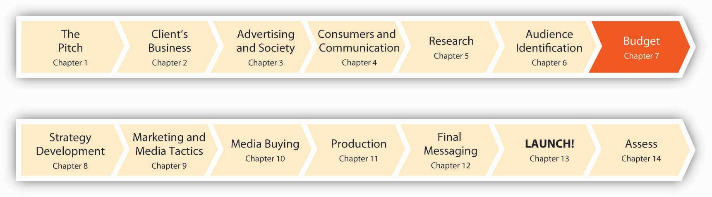
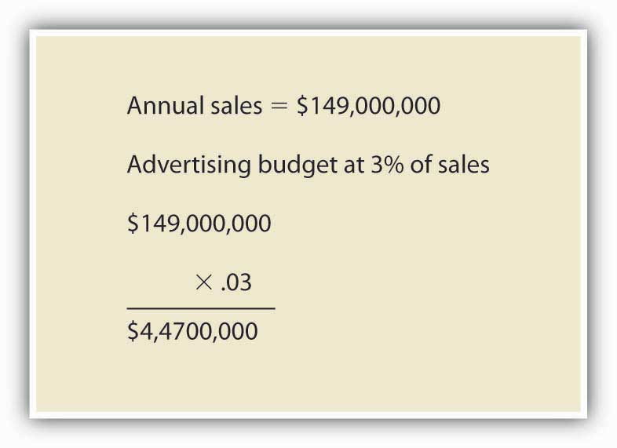
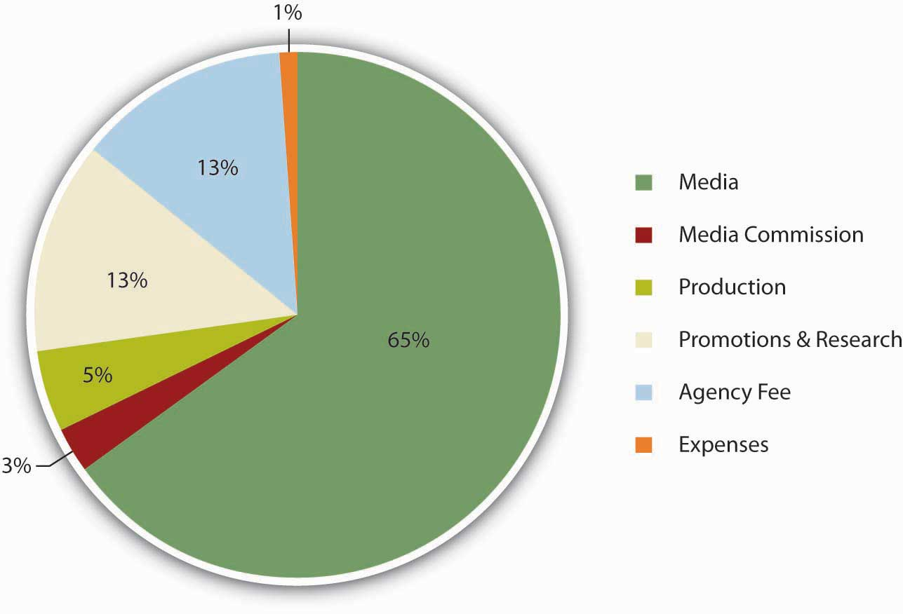
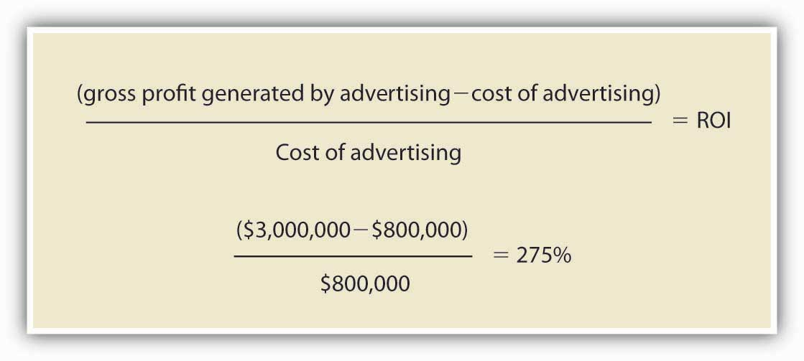

Figure 7.1 Nine Months to Launch!
Before the SS+K team could set off to develop their marketing recommendations, Catherine Captain had to set a budget for their efforts. It was important for Russell and Amit to understand the parameters of the work at hand; creative, media, and promotional recommendations would be vastly different for a $2 million effort versus a $20 million effort.
Once they were informed of the blanket budget to cover all SS+K related initiatives, it was up to them to work with Catherine to recommend the best way to make every dollar sing. But before the budget is split up, the client has to determine the total. As the VP of Marketing, Catherine had to request a certain amount of money from the board of msnbc.com—and justify why she wanted it. In the ad biz, there’s no such thing as a free lunch.
After studying this section, students should be able to do the following:
Budget decisions are affected by conditions both internal and external to the client. One key external influence is the overall economic condition of the country and how this affects the client’s industry. Even the most inspired advertising may not motivate consumers to open their wallets in troubled times like now. We see this situation now quite clearly, for example, in the automotive industry, as the stock market and credit crises have made money scarce, and consumers are pressed to pay higher prices for gasoline, home heating, groceries, and other necessities. It’s not surprising, then, that automotive advertising spending in the United States dropped to $1.99 billion in the first quarter of 2008. That sounds like a lot of money (and it is!)—but it’s down more than 14 percent compared with the same time a year before. As one industry executive observed, ad spending is “sinking as fast as new car sales.” When times are tough, nothing is sacred: Even Tiger Woods’ nine-year relationship as a fixture in General Motors’ advertising got the axe as the industry tries to slash its costs.Quoted in “Auto Ad Spending Down, Except Digital,” eMarketer, July 23, 2008, http://www.emarketer.com/Article.aspx?id=1006426&src=article1_newsltr (accessed July 23, 2008); Rich Thomaselli, “GM Ending Tiger Woods Endorsement Deal,” Advertising Age, November 24, 2008, http://adage.com/article?article_id=132810 (accessed November 28, 2008); http://adage.com/article?article_id=46288& search_phrase=shona%20seifert.
In top-down budgetingMethod in which top management sets the amount the company will spend on promotional activities for the year; it is allocated among all of the company’s advertising, PR, and other promotional programs., top management sets the overall amount the company will spend on promotional activities for the year. This total amount is then allocated among all of the advertising, PR, and other promotional programs. How does top management arrive at the annual promotional budget? Typically, they use a percentage-of-sales method, in which the budget is based on the amount the company spent on advertising in the previous year and the sales in that year.
The percentage-of-salesBudgeting method that divides the ratio of the firm’s past annual promotional budget by past sales to arrive at the percentage of sales; this is applied to expected sales in the coming year to arrive at the ad budget for that year. method is the ratio of the firm’s past annual promotional budget divided by past sales to arrive at the percentage of sales. That percentage of sales is then applied to the expected sales in the coming year to arrive at the budget for that year. For example, if the company spent $20 million on advertising last year and had $100 million in sales, the percentage of sales would be 20 percent. If the company expects to achieve $120 million in sales the following year, then 20 percent of $120 million is $24 million, which would be the budget for advertising that year.
Figure 7.2 Percentage-of-Sales Method
Wall Street analysts sometimes look at changes in the ad-to-sales ratioThe relationship between a company’s promotional budget and its sales; this ratio is important to business analysts in assessing a company’s health. as a sign of the health of a company. For example, Procter & Gamble’s ad-to-sales-ratio slipped from 10.7 percent in 2004 to 9.9 percent in 2006. Those declines came as P&G faced growing margin pressure from rising commodity costs. Some analysts see strong ad spending as an investment in growth or a sign that a company is having no trouble meeting its earnings targets, so they want to see an ad-to-sales ratio that is consistent or increasing.Jack Neff, “P&G Rewrites its Definition of ‘Ad Spend,’” Advertising Age, September 3, 2007, 3.
Some companies use industry averagesA technique for evaluating ad-to-sales ratios based on the ratios seen in a group of companies in a given industry. (published by trade associations) as a guide to set their promotional budget. Ad-to-sales ratios vary widely depending on the industry. For example, health services companies had one of the highest ad-to-sales ratios for 2006, at 18.7 percent. Other industries with high ad-to-sales ratios are transportation services (14.2 percent), motion pictures and videotape productions (13.7 percent), food (11.9 percent), newspapers (11.1 percent), and broadcast television stations (10.7 percent). In contrast, computer and office equipment had an ad-to-sales ratio of 1.2 percent, while computers and software wholesale had only a 0.2 percent ad-to-sales ratio.Kate Maddox, “Ad Spending Up in ’05, ’06,” B to B, August 8, 2005, 17.
Sometimes a dramatic increase in ad spending by one competitor in an industry spurs others to follow suit. For example, in 2007 German insurance giant Allianz more than quadrupled its annual global advertising budget to 225 million euros after competitor Zurich Financial Services launched a large-scale global awareness campaign.“Allianz Plans €225m Global Branding Blitz,” Marketing Week, May 3, 2007, http://goliath.ecnext.com/coms2/gi_0199-6503373/Allianz-plans-225m-global-branding.html (accessed February 1, 2009). Similarly, the auto insurance industry saw overall ad spending jump more than 32 percent in just two years when GEICO increased its ad spending 75 percent in 2004; this spurred competitors to increase their ad budgets as well. Progressive Insurance spent $265 million in 2006, up from $201 million in 2004, and State Farm likewise plans to increase spending, which topped $270 million in measured media in 2006.Mya Frazier, “Geico’s $500M Outlay Pays Off,” Advertising Age, July 9, 2007, 8.
Spending on certain segments of the promotional budget, such as on coupons, is very much driven by competitor spending levels. Consumer packaged goods companies like P&G and Unilever claim not to like couponing schemes as a promotional activity. Indeed, P&G looked into eliminating coupons in 1997 due to declining newspaper circulation and usage. But companies are tied to using coupon promotions. If one company alone decides to forgo couponing, they face losing cost-conscious consumers to the competition. If companies try to work together to scale back on couponing, they might be accused of violating antitrust regulations. As a result, spending on the media side of couponing was up 26 percent in 2006, reaching $1.8 billion, even though consumer use of coupons was down 13 percent during the same time period.Jack Neff, “Package-Goods Players Just Can’t Quit Coupons,” Advertising Age, May 14, 2007, 8.
The advantages of top-down approaches are their speed and straightforwardness. The disadvantage is that the methods look to the past as a guide, rather than to future goals. Just because a company spent $40 million on advertising the previous year doesn’t mean that figure is right for next year. Also, budgets tied to sales figures mean that a company’s promotional budget will decrease if sales decrease—but in fact increasing the promotional budget may be precisely what is needed in order to remedy declining sales.
Alternatively, some companies begin the budgeting process each year with a clean slate. They use bottom-up budgetingMethod in which a company begins the promotional budgeting process each year with a clean slate, identifying promotional goals and allocating enough money to achieve those goals. techniques, in which they first identify promotional goals (regardless of past performance) and allocate enough money to achieve those goals.
The objective-task methodThe most common technique of bottom-up budgeting, in which a company sets the objective or task they want the promotion to achieve, then estimates the budget needed to achieve it; top management reviews and approves the budget recommendation. is the most common technique of bottom-up budgeting. Companies that use this method first set the objective or task they want the promotion to achieve. Next, they estimate the budget they will need to accomplish that objective or task. Finally, top management reviews and approves the budget recommendation.
For example, champagne maker Moët & Chandon set its objective “to grow the whole market” in the United States.Jeremy Mullman, “Moët, Rivals Pour More Ad Bucks into Bubbly: Champagne Makers Try to Create Year-Round Demand,” Advertising Age, September 3, 2007, 4. That is, Moët will use advertising to increase consumption of champagne throughout the year, not just over the holidays. Moët based its objective on research that compared champagne consumption in the United States to that in other countries. “The average U.S consumer drinks half a glass of champagne a year, the average British consumer drinks half a bottle and the average French consumer drinks three bottles. There’s clearly room for growth,” said Stuart Foster, director of business development at Moët-Hennessy USA.Jeremy Mullman, “Moët, Rivals Pour More Ad Bucks into Bubbly: Champagne Makers Try to Create Year-Round Demand,” Advertising Age, September 3, 2007, 4. Moët more than tripled its U.S. ad spending in 2006 to $9.5 million from $2.8 million. Reflecting the objective, the company ran its advertising in the summer rather than just around the holidays.
Similarly, Danone Waters is increasing its ad spending in the United Kingdom in 2008 in an effort to increase bottled water consumption among British consumers. Danone Waters is increasing its spending by 15 percent, compared to Moët’s tripling of ad expenditures, which shows that there is no hard-and-fast rule about how much budget is needed to reach a given objective.Jeremy Mullman, “Moët, Rivals Pour More Ad Bucks into Bubbly: Champagne Makers Try to Create Year-Round Demand,” Advertising Age, September 3, 2007, 4; “Danone Waters Plans to Increase Spend by 15%,” Marketing, July 25, 2007, 4.
Other objectives advertisers can set include acquiring new customers, retaining existing customers, or building the brand. The objective to acquire new customers often requires a bigger budget than the advertising the firm needs to retain existing customers.
Some companies use the product life cycle methodStage-based budgeting technique that allocates more money during the introduction stage of a new product than in later stages when the product is established., in which they allocate more money during the introduction stage of a new product than in later stages when the product is established. For example, Procter & Gamble allocated $15 million to advertising Dawn Simple Pleasures, a new liquid detergent product that comes with a separate air freshener attached to the base of the bottle. It allocated less money ($10–12 million) for Dawn Direct Foam, a product it launched two years prior.Vanessa L. Facenda, “Procter Dishes out 3-Tiered Dawn Attack,” Brandweek, September 24, 2007, 4. The need to spend heavily to promote new products is especially strong for pharmaceutical companies when they introduce new drugs. Pharmaceutical companies need to get physicians to talk about their drugs and prescribe them.
In contrast, companies such as baby food manufacturers need to invest in strong promotion on a continual basis, because they get a new set of customers every year. “We provide strong consumer promotion support to drive trial, particularly in our baby segments, where we have a new group of consumers entering the market each year,” said Randy Sloan, executive vice president and general manager at Del Pharmaceuticals, which is the number one advertiser in teething pain relief, children’s toothpaste, and adult oral pain products.Quoted in “A Targeted Approach Creates a Powerhouse,” Chain Drug Review, June 4, 2007, 34.
Since msnbc.com’s fiscal year runs from July to June, Catherine Captain and all other department heads must start submitting their budget requests in March so that the board can determine their budgets before the next fiscal year starts. They use a bottom-up strategy based on objectives, but sales are also a vital part of determining what the final spend will be.
Catherine Captain
(click to see video)Catherine Captain talks about the relativity of budget sizes.
In addition to deciding how much to spend, companies need to know when they will be spending the money.
Figure 7.3 msnbc.com Budget Allocation
For some companies, the timing is smooth. As we saw with the Moët champagne example, the company will spend its budget throughout the year. Many other businesses step up their advertising in the weeks leading up to the Christmas holiday season. Others, such as beach apparel makers or home improvement companies whose work is done in warm weather, may concentrate their spending during a particular time of year.
Keep in mind that the budget needs to pay for more than just creating the ads and buying the media to run them. Consider a beachwear campaign for an apparel maker as an example. Although most of the campaign budget is spent in the second quarter on media buys to hit consumers with swimsuit ads as they gear up for summer, the ad agency has to allocate some of the money to laying the groundwork for this campaign. It will need to spend some money in the earlier part of the year to pay for market research, ad development, and testing. After the ads run, the last of the budget might go to assess the campaign’s effectiveness.
Other factors that contribute to budgeting:
While a lump sum budget had been approved for SS+K to spend, Catherine Captain and msnbc.com had to be responsive to their internal revenue situations. In other words, if they weren’t hitting other advertising sales objectives, they were not going to be ready to pull the trigger on the disbursement of millions of dollars.
Figure 7.4 Budget Snapshot of the Elements and Timing for the msnbc.com Campaign
SS+K outlined each element of the production and when the agency would have to have the client’s money fully committed and available to spend. Part of the account management team’s responsibility is to manage the schedule by which everyone gets paid for her part in a production.
Catherine Captain
(click to see video)Catherine Captain explains the importance of the first marketing budget and what would happen if it didn’t go well.
Clients use a variety of methods to determine their advertising budgets. One basic distinction is between top-down and bottom-up methods. Top-down approaches are easier; they basically use last year’s expenditures as a starting point. However, they also are more simplistic and may be self-defeating because they wind up allocating more money to promote products that are doing well at the expense of products that are doing poorly—when just the opposite adjustment may make more sense. Bottom-up approaches start by specifying the particular objectives a firm has for a brand and then estimating how much it will cost to meet those objectives. Budget-setting is more complicated than just tallying up what it costs to make and place advertising; the client also has to consider the resources an agency will need to conduct research, develop an advertising strategy, and measure how well the strategy worked so it can tweak the approach in the future if necessary.
After studying this section, students should be able to:
Share of voice (SOV)The relative fraction of ad inventory a single advertiser uses within a defined market over a specified time period. is the relative fraction of ad inventory a single advertiser uses within a defined market over a specified time period. It measures how you are doing relative to competitors and relative to all the ads within your given space. It tells you the total percentage that you possess of the particular niche, market, or audience that you are targeting. The obvious way for a client to attain high SOV is to buy a lot of ad space. Another way is to have competitors that don’t advertise very much; remember SOV is a measure of relative activity.
Figure 7.5 Share of Voice

The share of voice concept can be demonstrated by the participation in a class. The students who participate the most relative to other students have a larger share of voice in the class. The same happens in advertising.
Online, Google uses a similar metric it calls Impression ShareA metric used by Web site hosts to represent the percentage of times an ad was actually shown in relation to the total number of chances it could have been shown, based on its keyword and campaign settings. to represent the percentage of times your ads were actually shown in relation to the total number of chances your ads could have been shown, based on your keyword and campaign settings.“Discover your Share of Voice with Impression Share Reporting,” Google AdWords, http://adwords.blogspot.com/2007/07/discover-your-share-of-voice-with.html, (accessed July 23, 2008).
As msnbc.com’s marketing budget is nowhere near those of its largest rivals like CNN or the New York Times, SS+K didn’t even think about attaining competitive SOV share in this campaign. However, since a major objective for the campaign was to increase awareness and impressions, the agency deliberately used tactics that resulted in large SOV on a particular day. For example, when they placed their ads on Web sites they would try to engineer a “homepage takeover” or a “roadblock,” meaning that all the available ad units on the homepage are dedicated to one advertiser.
In situations where big clients compete on a fairly even playing field (unlike SS+K’s “David and Goliath” situation with msnbc.com), share of voice is an important indicator of competitiveness. It reflects the extent to which your customers are being influenced by your ads versus those of rivals who also try to get their attention with similar messages. Long-term analysis shows that brands that increase their share of voice with powerful advertising stand a better chance of increasing their market share.
High SOV helps provide top-of-mind awareness and provides a company with a competitive advantage because this awareness allows it to dictate what criteria consumers use to evaluate products.“Pepsi introduces freshness dating,” Chain Drug Review (April, 1994), http://findarticles.com/p/articles/mi_hb3007/is_199404/ai_n7964159, (accessed July 23, 2008). For example, in the last century (1994, to be exact) the heavy advertiser Pepsi introduced “freshness dating” on its products and convinced many consumers that it’s important to buy cans of soda that are less than a year old.“Research Ensures Rewards,” Marketing Week (July 5, 2007), p33. This campaign was pretty successful—even though in reality a very small percentage of soft drink inventory in a grocery store would linger on the shelves for that long. In the ad biz, it’s often true that “he who has the bucks, makes the rules.”
How much share of voice can you afford? How much would it cost to buy every minute of commercial time in the Super Bowl? You can’t afford to buy it all, but you can buy some fraction of it.
Attaining high SOV usually means spending more than your competitors. If your analysis suggests that your competitors spend $5 million on media buys, then you need to spend $5 million just to match them and achieve a 50% SOV. If the competition has cut back on spending (such as during an economic downturn like we’re now experiencing), then you might maintain your current level of ad spending and still garner a high SOV. If your company has many competitors or bigger competitors, you may find it impossible to outspend them to achieve a high SOV.
To promote its DVD of Hollow Man, movie studio Columbia Tri-Star asked its ad agency, Universal McCann Los Angeles, to reach as many consumers as possible with a relatively low budget. Like SS+K did for msnbc.com, the agency created a “roadblock” campaign on the top online portals, entertainment properties, and sci-fi sites over a few hours in one specific day. During a roadblockAn ad strategy in which the only ads that appear for a specified time period are those for one company, achieving 100% SOV for those hours., the only ads that appear are those for that company. Thus, on one Friday during the lunch hour and during 6:00 p.m. to 9:00 p.m., the only ads shown on these sites were for Hollow Man, achieving 100% SOV for those hours.
Did this saturation strategy work? Several online vendors reported huge sales spikes of Hollow Man, and one vendor reported a 25% sales increase during the time the campaign was live. In addition, the DVD debuted in the number one position for sales and remained in the Top-Twenty Chart for three months.Joseph Jaffe, “Dominate Online Share of Voice,” iMedia Connection (February 24, 2003), http://www.imediaconnection.com/content/1050.asp, (accessed July 23, 2008).
For small companies, share of voice is often not an appropriate metric because there are so many bigger competitors who will outspend the smaller company. The online roadblock tactic might be one way of achieving share of voice that is less expensive. Perhaps a better way to set budgets, however, might be to use the return on investment approach, as we’ll see next.
Share of voice is a way to think about the impact one brand’s advertising has on its audience—relative to what its competitors are doing. Clients with reasonably equal resources can compare how active they are (i.e., how many messages the campaign sends out). Clients who are at a financial disadvantage have to be a bit more creative. Sometimes they prefer to concentrate their limited resources to get a bigger bang for the buck during a limited time period and forgo the opportunity to send out their messages at other times.
After studying this section, students should be able to do the following:
Return on investmentThe amount of profit an investment generates; an approach to budgeting that views advertising as an investment, not a cost. is the amount of profit an investment generates. In other words, did your action result in more (or less) than what it cost to implement? The ROI approach to budgeting looks at advertisement as an investment, not a cost. And like any investment, the company expects a good financial return on that investment. By making the investment in advertising, the company expects to see profits from that investment.
Figure 7.6
ROI is a way to determine the sales generated from advertising relative to the cost of the advertising.
The idea behind ROI is that for every dollar you spend on advertising, you get a dollar-plus-something of profit in return. The challenge with ROI is that it’s difficult to interpret and analyze the contribution of a specific ad, media channel, or campaign to overall profit. Is the profit coming from a short-term sales blip or is it contributing to longer-term profits?
ROI is the language of business. Although many marketing people traditionally evaluate a campaign’s success in terms of intangibles like brand awareness, top management insists on more tangible results: ka-ching! Advertisers face increasing pressure to translate the results of what they do into ROI terms. If they succeed, they can assure the bean counters that if they’re given a certain amount of budget, they will earn the company x percent more. But it’s not so easy to quantify the effects of ad messages, and it never has been. One well-known quote (so well known it’s practically a cliché) that has at times been attributed to Henry Ford, retailing executive John Wanamaker, and others sums up this dilemma: “I know that half of my advertising works—I just don’t know which half.”
How many people watch TV commercials, and how effective are these spots in influencing actual purchases? These are vitally important questions—especially because the networks set their rates for advertising based upon how many people see their shows. To date there still is no foolproof way to deliver these metricsQuantifiable measures that gauge the direct impact of a marketing communication., and it’s the source of a lot of controversy in the advertising industry.
The dominant measurement system is the Nielsen Television Ratings that the networks have relied upon since the earliest days of television. The Nielsen Company collects these measures by recruiting a panel of consumers who keep a diary of what they watch and by so-called set meters that it connects to members’ TV sets to transmit data about which channels get selected. These methods suffer from obvious problems—for example, our memories about what we watch often are distorted and biased, and just because a set is tuned to a channel doesn’t mean anyone is actually watching. Nielsen is working hard to update its technology with People Meters that individual members of the household use to record their viewing behaviors. GfK AG’s Mediamark Research Inc. also is developing a pager-size media-measurement device. And, to keep pace with consumers’ changing habits, Nielsen has started to measure out-of-home viewing (in bars, dorms, and other locations) as well as the usage of digital video recordings like TiVo. Nielsen is also working on a new measurement system it calls Anytime Anywhere Media Measurement. This system will track a group of sample viewers—but it will monitor their usage of several different media including the Internet, mobile devices like iPods, and traditional television.Emily Steel, “Who’s Watching Those Webisodes? As TV Programs Fan Out to Cellphones and Beyond, a Race to Measure Audience,” Wall Street Journal, October 11, 2006, B4.
The company that comes up with a truly reliable system to measure how consumers interact with media (and the advertising they contain) will be worth its weight in gold. One new research firm called TRA (True ROI Accountability for Media) is trying another strategy: it merges data from people’s cable set-top boxes with consumer-purchase databases, such as the information stores gather from frequent-shopper cards. For instance, a company could see whether households that watched an ad for its toothpaste later bought that brand of toothpaste. In a test of its system, TRA is using data from cable boxes to measure second-by-second viewership of TV programs and commercials in three hundred thousand households in Southern California, and it aims to sign up more than one million U.S. households across the country in the near future.Stephanie Kang, “Couch to Supermarket: Connecting Dots,” Wall Street Journal, February 11, 2008, B7.
A different approach hopes to use cell phones to measure what consumers listen to and see. The startup firm Integrated Media Measurement Inc. has developed software that enables specially adapted cell phones to take samples of nearby sounds, which it then identifies by comparing these to a large database. The company claims that this technology can track exposure to television, radio, CDs, DVDs, video games, sporting events, audio and video on portable gadgets, and movies in theaters. These are some of the questions the company hopes to answer:Don Clark, “Ad Measurement Is Going High Tech: Explosion of Media Offerings Complicates Finding whether Message is Getting Through,” Wall Street Journal, April 6, 2006, B4.
Stay tuned…
At the end of the day, then, share of voice is only a means to the end. Ultimately, advertisers want consumers to purchase what they make, not just think their ads are awesome. If the money spent on advertising never generates any returns, then what is the point—other than to improve the bottom lines of ad agencies and enrich the portfolios of creative directors? As Gavin Ailes, business director at The Search Works in the United Kingdom, explained, if a company gets two dollars back for each dollar they invest, “that’s great, they shouldn’t really worry too much whether they have ‘share of voice’ or whatever among a particular group.”Quoted in Sean Hargraves, “Made to Measure,” New Media Age, June 21, 2007, 21.
An Institute of Practitioners (IPA) report entitled Marketing in the Era of Accountability is based on the IPA’s database of effectiveness awards case studies. The report found that advertising campaigns that set hard objectives, such as to “improve profits,” are more effective than those that focus on intermediate goals, such as degree of brand awareness. Fewer than 20 percent of companies evaluate their communications campaigns on the basis of their effect on profits, however, because it is easier to measure an intermediate metric than an ROI metric.“Marketing Theory: Everything You Know Is Wrong,” Marketing, June 13, 2007, 28.
As msnbc.com set its goals for the branding campaign, the client had to identify what metrics (measures of effectiveness) would be most meaningful to their mission. All marketers ultimately aim to increase revenue for their business as a result of marketing efforts. Every element of a campaign has accountability to perform or meet that goal; otherwise it’s not likely to appear again.
With the first round, msnbc.com decided to invest in some short-term vehicles—Web ads and click-through rates—to determine ROI. They also invested in some long-term vehicles such as the screensaver and the NewsBreaker online game we’ll check out later.
Using ROI effectively depends on several factors, including visibility, the difference between revenue and profit, channel effectiveness, and taking a long-term perspective.
Some firms are in the enviable position of seeing a return on their investment more directly than others. For example, Domino’s Pizza can see the results of its advertising almost immediately—a TV ad immediately spurs calls to its outlets as people order the ExtravaganZZa Feast the spot featured. As the chain’s marketing director explained, “The time it takes from initial consideration to consumption can be less than an hour. We can see the impact of a TV ad almost immediately.”Quoted in “The Marketing Society Forum—Is a Focus on ROI Hindering Marketing’s Effectiveness?” Marketing, June 20, 2007, 24.
Online advertising is also amenable to rigorous ROI measures. Watching impressions, counting click-throughs, and using cookies let advertising managers know how many people saw an ad, clicked on the ad, and bought from the ad. Web traffic can be tracked, and advertising spending can be aligned to sales.“The Self-Assured Industry,” Marketing Week, June 14, 2007, 28.
As difficult as the ROI of traditional advertising vehicles is to measure, word of mouth is even harder to measure. As online content chatter on blogs and Web sites continues to mushroom, advertisers need to measure just what consumers are saying about their products and how active they are in spreading the word about viral marketing campaigns or other online promotions. Buzz Metrics, a subsidiary of the Nielsen Company, offers marketers research services to help advertisers understand how CGM (consumer-generated media) affects their brands. Nielsen’s Buzz Metrics search engines identify online word-of-mouth commentary and conversations to closely examine phrases, opinions, keywords, sentences, and images people use when they talk about a client’s products. The company’s processing programs then analyze vocabulary, language patterns, and phrasing to determine whether the comments are positive or negative and whether the authors are men, women, young, or old to more accurately measure buzz. BuzzMetrics’ BrandPulse and BrandPulse Insight reports tell advertisers who is talking about their products online and what they say about the ads they’re seeing.Keith Schneider, “Brands for the Chattering Masses,” New York Times Online, December 17, 2006, http://www.nytimes.com/2006/12/17/business/yourmoney/17buzz.html (accessed December 17, 2006); Nielsen Buzzmetrics, http://www.nielsenbuzzmetrics.com/products (accessed April 14, 2008).
Ideally, payback should be about profit, but many companies confuse added profit with added revenue. To avoid these mistakes, clothing manufacturer VF Corp (whose brands include Lee, Wrangler, Nautica, and The North Face, among others) spent two years and millions of dollars studying consumer responses to its marketing efforts while seeking to determine which of its brands have gotten the best ROI from advertising. “We are convinced we can be more effective by having a better understanding of marketing return on investment and will get paid back on our investment several times over,” said Eric Wiseman, president/COO at VF.
In 2006, VF spent about $325 million on advertising across all its brands. The Nautica brand is already reaping the benefits of VF’s ROI research. The company increased Nautica’s marketing budget the next year. “Our budget is up and we are moving the mix around,” said Chris Fuentes, vice president of marketing at Nautica. “We’ve looked at each element of our marketing—magazines, newspaper, outdoor, sponsorship, public relations—[and] we can isolate what is working. We’re understanding now what is driving consumption and building brand equity.”
The research helped the company decide that Nautica’s advertising budget should be increased because the advertising was providing a good return on investment. What’s more, the research helped Nautica pinpoint which of its campaigns were most effective in bringing that return. Nautica is using that information to decide how to allocate its advertising budget. Nautica uses an integrated marketing program of print, outdoor, and Internet advertising. The research showed that newspaper ads generated underachieving results, so Nautica will spend less on them, but it will boost its Internet presence to target young men for its new N series jeans. Nautica spent $20 million on ads in 2006.Quoted in Sandra O’Loughlin, “VF Designs Dynamic Future for Lee, Wrangler, Nautica: ROI Study Spurs Aggressive Marketing Plans at $7B Company,” Brandweek April 9, 2007, 16.
ROI can also help manage an advertising campaign as effectiveness measures help identify which specific media platforms deliver the best bang for the buck. Nautica relies on its ROI research to drive budget allocation among different campaigns, allocating more to those that have provided the best return in the past. For example, Nautica’s sponsorship of the AVP Pro Beach Volleyball Tour produced good results. So, in 2007, Nautica increased its presence there, adding on-court billboards and a scoreboard bug on the TV screen, and having announcers and pro Misty May outfitted in Nautica apparel.
One promotional channel that’s been getting a lot more attention in recent years is POP (point-of-purchase) advertisingAd messages that shoppers see when they are physically located in a purchasing environment.—ad messages that shoppers see when they are physically located in a purchasing environment. Like traditional advertising, it’s hard to determine how effective these messages are—though we know that in some categories (e.g., grocery) many shoppers don’t make their final decisions until they’re wheeling their carts through the aisles (never go food shopping when you’re hungry!).
A major new initiative called P.R.I.S.M. (Pioneering Research for an In-Store Metric) is attempting to quantify the impact of these messages. Participating companies include Procter & Gamble, Coca-Cola, ConAgra, General Mills, Kroger, Walgreens, Wal-Mart, 3M, Walt Disney, Kellogg, Miller Brewing, and even Nintendo. Ad agencies OMD and Starcom MediaVest Group, as well as multiple retailers, are also involved. The measurement model predicts consumer reach by category or area of the store, by retail format, and by day of the week, delivering unprecedented insight into the store as a marketing channel.
The consortium’s research team began working on the theory that, by predicting in-store traffic, then determining what marketing communications are in the store, it could calculate the “opportunities to see” a specific communication. By using existing statistical models that factor out duplicate impressions (accounting for multiple “visits” to the area by the same people) a measurement for consumer reach could be calculated for specific locations in the store. Initial tests have been promising. The CEO of Procter & Gamble recently predicted, “P.R.I.S.M. will transform how we think about in-store consumer communications and behavior.”Quoted in David Goetzl, “P&G CEO Endorses In-Store Marketing Measurement,” Marketing Daily, February 25, 2008, http://www.mediapost.com/publications/index.cfm?fa=Articles.showArticle&art_aid=77117 (accessed February 25, 2008); “The P.R.I.S.M. Project: Measuring In-Store Reach,” In-Store Marketing Institute, September 2006, http://www.instoremarketer.org/?q=node/5779 (accessed July 23, 2008).
Most advertising ROI metrics tend to focus on short-term profits from the immediate response to an ad. This emphasis is appropriate in some contexts; for example, that’s one of the big advantages of direct marketing, because the firm can immediately trace the impact of a mailing or e-mail blast and decide right away if it boosted orders.
On the other hand, brand-building campaigns produce a low ROI in terms of short-term profits, but they are crucial for the long term. In these cases managers may need to adopt a broader field of vision and be patient, even if they are bleeding red right now. For example, one company discovered that every dollar the company spent on TV advertising yielded only eighty cents back in short-term sales. Executives were thinking of chopping the TV budget, but the general manager said, “Just because print and promotion activities have the highest ROI, doesn’t mean they should get the majority of the money. Print only accounts for a small fraction of total sales, and while TV has a lower ROI, it’s responsible for a huge amount of ongoing sales.”Quoted in Randy Stone, “When Good Returns Mean Anything But,” Brandweek, April 9, 2007, 20. This reasoning shows that the bigger picture must be taken into account when managers make budget decisions. Making this case can be a daunting task for advertising agencies, especially when their clients are under pressure to show profitable returns to their shareholders.
At the end of the day, it’s all about ROI. Ad agencies and other promotional companies are coming under increasing pressure to show specifically how their activities deliver value to the client—by quantifying how much financial return the client receives in exchange for the money it spends to advertise. Showing ROI is difficult when many campaigns are more about building long-term awareness and loyalty than prompting immediate purchases (sales promotions, online advertising, and direct marketing are better able to link specific messages to specific results). However, there is a silver lining: this greater discipline forces advertising agencies to be more accountable—and in the process perhaps change the mindset of managers who tend to view advertising as a cost they need to minimize rather than as an investment in the brand’s performance.
Now that you understand the importance and implications of marketing investments, it’s important to set up your budget specific to the needs of the campaign and the client. From Figure 7.3 "msnbc.com Budget Allocation" we know that msnbc.com had to monitor its spending by month and by category (agency fee, production, media, promotions, etc.). This budget was set up to reflect the contract between SS+K and msnbc.com that spelled out the categories and the amounts of the client’s money that the agency was entitled to spend.
The open collaboration and understanding of financials is key to the success of any business partnership. Both sides are responsible for staying in budget, and the agency is specifically responsible for justifying anything it spends for any purpose to a client. Former Ogilvy and Mather executives Shona Seifert and Thomas Early learned this lesson the hard way. In 2005, both were convicted and sentenced to prison for their roles in overbilling one of the agency’s clients, the Office of National Drug Policy. Seifert also was ordered to write a code of ethics for the entire ad industry as part of her sentence.Matthew Creamer, “Shona Seifert Sentenced to 18 Months in Prison,” Advertising Age, July 14, 2005, http://adage.com/abstract.php?article_id=46288 (accessed February 1, 2009).
There are a few key pieces to managing the budget: bids, estimates, invoices, and actuals. A bidThe estimated cost that a vendor will charge for a service. is the estimated cost that a vendor will charge for a service. In some cases, the agency will have an exclusive partnership, and only one bid is needed. In other cases, a producer will take bids from multiple potential vendors or partners in order to understand the scope and price of that service.
Once the agency collects the bids, it will recommend the partner to the client. The formal acceptance of costs is the estimateOnce the agency collects the bids, it will recommend the partner to the client. The formal acceptance of costs is the estimate. It is generated from the producer or accounting department.. It is generated from the producer or accounting department. The agency outlines the job, a description, and the costs associated with the job. A job number is assigned to every estimate, and this job number and cost are inserted into the budget.
The agency invoices the client, and the client then pays the agency on the agreed-upon schedule. Sometimes jobs are billed at 100 percent of an invoice. Another common practice is to bill 50 percent of an invoice up front and 50 percent upon completion. It is important for the account manager to establish a system that works both for the agency and for the client when it comes to billing.
ActualsThe final cost of a job upon completion. are the final cost of a job upon completion. In the SS+K/msnbc.com budget tracker that Figure 7.3 "msnbc.com Budget Allocation" shows, the bid is indicated in italics, the estimate is indicated with no treatment, and actuals are indicated in bold. This helps the agency and the client understand the money flow and make future spending decisions accordingly.
The open collaboration and understanding of financials is critical to the success of any business partnership. Both agency and client are responsible for establishing and maintaining the budget. The agency is specifically responsible for justifying anything it spends for any purpose to a client. The key components that an agency must manage are bids, estimates, invoices, and actuals.
Now that you have read this chapter, you should be able to determine how the various budgeting methods can be applied to marketing and advertising:
It’s not exactly new news that cosmetic companies are interested in what’s going on in Hollywood or in who’s wearing their makeup. It is news, though, when the company that’s interested is Avon. In our mothers’ generation, Avon’s business model emphasized personal contact, consumer parties, online and hard-copy catalogs, and word-of-mouth advertising as the primary formats for attracting consumer attention.
Under the leadership of CEO Andrea Jung, for the past decade Avon has been venturing into more mass media-driven ways of promoting and marketing its product lines. The “Just Another Avon Lady” campaign featuring Olympic athletes and the “Let’s Talk” campaign were among the first such efforts. More recently, Hollywood stars Reese Witherspoon and Patrick Dempsey are promoting Avon products in print ads and acting as spokespersons to the press. Will this new “sizzle” help the sagging brand? Time will tell.
Research recent events at Avon (see http://www.avon.com) and review their new strategies and advertisements for reaching consumers. Construct a new communication plan that will increase the company’s share of voice (SOV). Explain how metrics can be used to monitor Avon’s SOV progress. Evaluate Avon’s chances for success in increasing SOV if they adopt your plan.
All of the budgeting methods presented in the chapter have advantages and disadvantages. Many of the disadvantages occur when the budgeting method is misapplied or used in the wrong circumstances. There appears to be no safe and sure way to decide which budget method is most appropriate. The “school of hard knocks” tells us that budgeting is as much of an art as it is a science.
Research a company of your own choosing and make a “best guess” about the budgeting form being used for advertising and promotional expenditures. Why do you think the company chose its budgeting method? Next, take each of the top-down and bottom-up budgeting methods described in the chapter and determine if any or all of the methods would be more appropriate for your chosen company. Comment on how you conducted your investigation and research process, how you made your “best guess,” and why the company should consider your budgeting advice. Discuss your findings with peers.
Do you Twitter? An increasing number of consumers do. According to the company’s Web site (http://www.twitter.com), “Twitter is a service for friends, family, and coworkers to communicate and stay connected through the exchange of quick, frequent answers to one simple question—what are you doing?”
There are various ways to “tweet” (send a Twitter message): use the Web site, instant message, and text message via cell phones. If a consumer chooses to use the Twitter Web site to make connections, he or she can microblog or information burst friends and acquaintances with up to 140 characters (short thoughts only). Such questions as “Where are you?” “What are you doing?” and “Where can we meet?” seem to be the most popular. This may all seem just like just another “texting” service, but Twitter is betting that consumer users will find new ways to make the “Twitter” experience special and more customized.
After researching the Twitter service and the implications for marketing and advertising of such services, assume the role of a creative director in an advertising agency and devise a plan for showing potential advertising clients how to use Twitter to advance their “share of voice (SOV)” objectives. Your plan should indicate new and creative ways to bring advertising client messages to consumers using the “texting” and “Twittering” formats. Discuss your ideas with peers and forecast the future of Twittering as a means of distributing advertising information and communication.
According to information in the chapter, “return on investment (ROI) makes advertising more accountable.” Advertisers spend vast sums to further their communication objectives. Studies have indicated that advertising campaigns that set hard objectives (e.g., to improve profits) are more effective than campaigns that focus on intermediate or short-term goals (e.g., brand awareness or increased daily sales of product). Strangely, however, only about 20 percent of companies use return on investment or contribution to profit as important indicators of communication success. Why don’t more companies consider bottom line profits when evaluating success? The simple answer is that it is easier to measure an intermediate metric than an ROI metric.
Take a position that considers the ethics of accountability. Position One: Communication and delivery of emotional message objectives should not be tied directly to profits because of the difficulty of tracing profits back to specific emotional messages. Position Two: In an era of accountability, all messages should be more rational and have profit enhancement as their fundamental purpose.
Pick one of the two positions and support your position. Be prepared to defend your position among peers.